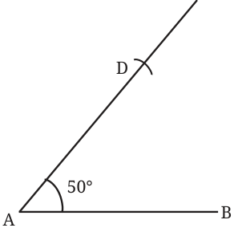
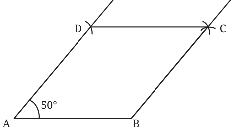
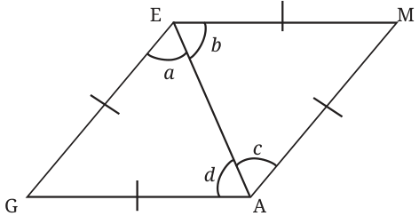
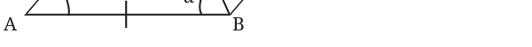
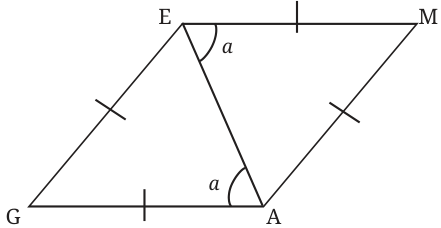
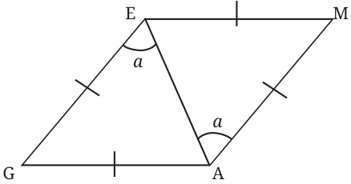
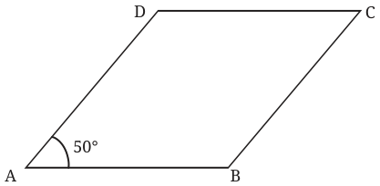
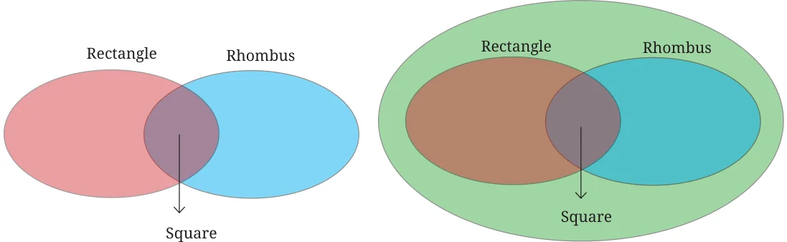
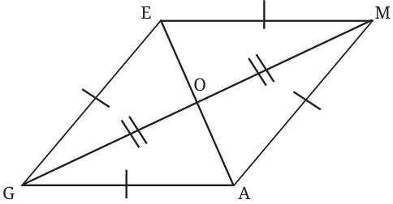

Are squares the only quadrilaterals that have equal sidelengths? Let us explore this question through construction. Draw two equal sides AD and AB, that are not perpendicular to each other.
Can we complete this quadrilateral so that all its sides are of the same length? Mark a point C whose distance from B and D is equal to AB (or AD). To do this, measure AB using a compass. Keeping this length as the radius, cut arcs from B and D.

Now we have a quadrilateral with equal sidelengths and one of its angles \(50 ^{\circ}\) . Note that we could have constructed such a quadrilateral by taking any angle less than \(180 ^{\circ}\) (in place of \(50 ^{\circ}\) ).
A quadrilateral in which all the sides have the same length is a rhombus.

What are the other angles of the rhombus ABCD that we have constructed? Reason and/or experiment to figure this out.
Deduction \(9 -\) What can we say about the angles in a rhombus?
Consider a rhombus GAME. In \(\triangle GAE\), since \(GE = GA\), \(a = d\). Similarly, in \(\triangle MAE\), since \(ME = MA\), \(b = c\). It can be seen that \(\triangle GAE \cong \triangle MAE\) (How?) So, \(a = b\), \(c = d\) and \(\angle G = \angle M\) (since they are corresponding parts of congruent triangles). Thus, we have, \(a = b = c = d\). These facts hold for any rhombus. Let us apply them to the rhombus ABCD that we constructed earlier. Let the four equal angles formed by the diagonal be a, as shown in the figure

In \(\triangle ADB\), we have
\(a + a + 50 = 180 ^{\circ}\) . So, \(a = 65 ^{\circ}\) .

Thus, the angles of the rhombus are \(50 ^{\circ}\) , \(130 ^{\circ}\) , \(50 ^{\circ}\) , and \(130 ^{\circ}\) . So,
equal to each other.
Interestingly, there is one more way by which we could have figured out the other angles of the rhombus ABCD. We have shown that in a general rhombus GAME, the four angles formed by a diagonal are equal to each other.


Consider the lines EM and GA and its Similarly consider the lines GE transversal AE. Since the alternate and AM and its transversal AE. angles are equal, EM||GA. Since the alternate angles are equal, GE||AM.

As opposite sides are parallel, GAME is also a parallelogram. Thus, every rhombus is a parallelogram, and the properties of a parallelogram hold true for a rhombus as well. Thus, the adjacent angles of a rhombus add up to \(180 ^{\circ}\) , and the opposite angles are equal (verify that the arguments in Deduction 6 can be applied to a rhombus as well!). Thus, in rhombus ABCD,

\(\angle A = \angle C = 50 ^{\circ}\) , and \(\angle D = \angle B = 180 - 50 = 130 ^{\circ}\) .
So a rhombus is a parallelogram, and a rectangle is also a parallelogram. How can this be represented using a Venn diagram?
Where will the set of squares occur in this diagram? We know that a square is a rectangle. Since the opposite sides of a square are parallel, a square is also a parallelogram. Further, since all the sides of a square have the same length, a square is also a rhombus. Thus, the Venn diagram will be as follows.

Let us list the properties of a rhombus. Property 1: All the sides of a rhombus are equal to each other. Property 2: The opposite sides of a rhombus are parallel to each other. Property 3: In a rhombus, the adjacent angles add up to \(180 ^{\circ}\) , and the opposite angles are equal.
Are the diagonals of a rhombus equal?
Property 4: The diagonals of a rhombus bisect each other. Property 5: The diagonals of a rhombus bisect its angles.

Do the diagonals of a rhombus intersect at any particular angle? Reason out and/or experiment to figure this out!
Deduction \(10 -\) What can we say about the angles formed by the diagonals of a rhombus at their point of intersection?

In the rhombus GAME, we have \(\triangle GEO \cong \triangle MEO\) (why?). So, \(\angle GOE = \angle MOE\), as they are corresponding parts of congruent triangles. As they add up to \(180 ^{\circ}\) , they should be \(90 ^{\circ}\) each. Property 6: Diagonals of a rhombus intersect each other at an angle of \(90 ^{\circ}\) .